我们离终身游戏 agent 还有多远？
一个给自己写代码的 agent 在浏览器小游戏和宝可梦对战上的证据
摘要
一个终身游戏 agent 应当能凭反馈把任何新游戏玩好，并且玩过的游戏越多，学下一个游戏就越快。我们用一个不更新权重的 agent 检验这个目标离现实有多远：它在一个持久工作区里给自己写技能程序、记笔记、记成绩，所有游戏使用完全相同的提示词，没有任何逐游戏的人工设计。
在 10 个浏览器游戏（约 5 000 局）和宝可梦对战（3 400 局）上，我们发现：agent 能在单个游戏内越玩越好，但前提是把经验写成可执行的代码，文字笔记与没有记忆不可区分；不给它任何记忆结构，它会自己发明出单游戏学习所需的结构。然而它学到的东西带不走：跨游戏收益是一个不随经历增长的常数，同类游戏的经验没有额外好处，在宝可梦里加入跨世代总结也没有带来迁移。逐级加大环境变化后可以看到，经验只在画面不变时有用，仅把画面颜色反转，经验就从有利变为有害。
结论是：单游戏内的自我改进和自组织记忆已经可以实现；但 agent 存下的经验要么绑定在像素上，要么只是复述模型本来就知道的常识，缺少"游戏规则"这一层，这是迁移失败的主要原因。我们据此提出下一步的可证伪假设：让 agent 建立并验证规则模型，把规则作为跨游戏积累的单位。
本文为修订版（2026-10-20）。修订内容见附录 A.4：撤回了一条源于实验框架缺陷的结论，并把受影响的读数换成不受影响的读数。
1引言
人类玩家有一种能力很少被认真测量：玩过足够多的游戏后，拿到一个新游戏，几局之内就能上手，并且这种上手速度会随经历越来越快。我们把具备这种能力的系统称为终身游戏 agent。它至少要做到三件事：
- 在一个游戏里越玩越好：只依靠游戏给的反馈，而不是人为它写好的规则。
- 自己组织记忆：决定记什么、怎么记，而不是由人为每个游戏设计数据结构。
- 把经验带到下一个游戏：学第 N 个游戏的代价随 N 下降，同时不忘记已经学会的游戏。
大模型的出现让这件事第一次可以在不训练权重的前提下尝试。一个视觉语言模型能看懂屏幕、会写代码、能反思失败；如果再给它一块可以长期读写的工作区，它在原则上就可以把每一局的教训沉淀下来，并在下一个游戏里复用。这类思路在 Minecraft 等单一世界里已有先例（Voyager、Cradle 等），但它们大多依赖结构化的游戏接口，并且没有在不同的游戏之间、用从零开始的对照组测量过迁移。
本报告用一个刻意保持简单、通用的 agent 来回答一个问题：按上面三条标准，我们今天离终身游戏 agent 还有多远？我们的贡献是：
- 一套零逐游戏工程的评测方案，包括单游戏学习、跨游戏序列、相似度阶梯和借自持续学习的"链式性能矩阵"，均以从零开始的 agent 作配对对照。
- 六条实证发现，分别对应上面三条标准，并给出每条结论背后的机制证据（agent 写下的代码和笔记）。
- 对缺口的定位：经验要么绑定像素、要么只是常识，缺少"游戏规则"这一层；并据此提出一个可证伪的下一步假设。
2环境与度量
我们使用 GameWorld 浏览器游戏集。agent 每一步只能看到一张屏幕截图，从游戏注册的几个按键动作中选择一个；推理期间游戏暂停，所以模型思考的快慢不会影响游戏。每局 400 步，每个动作持续 0.1 到 0.2 秒。我们从中选出 10 个可以稳定打分、玩法各异的游戏，按玩法分成四类：
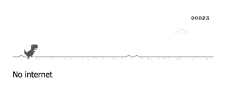
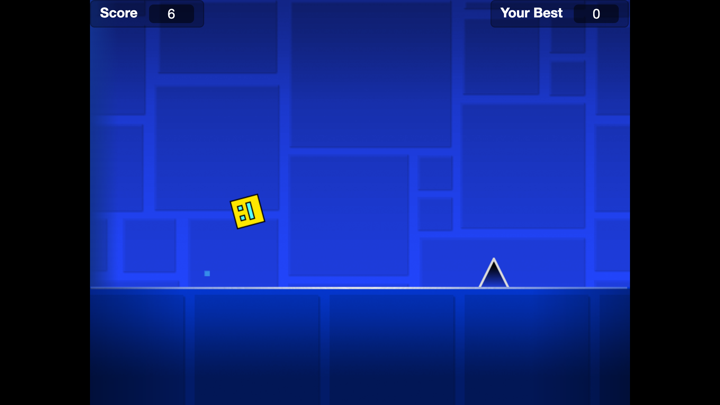
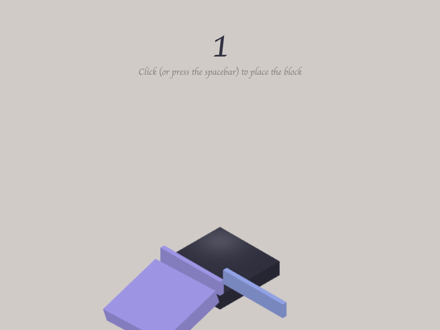
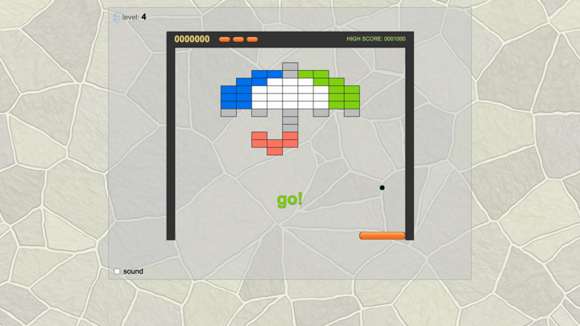
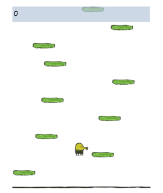
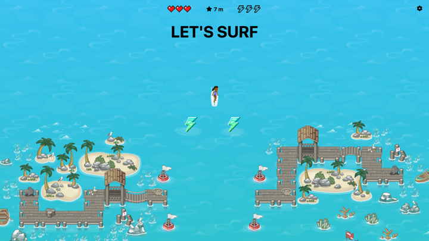
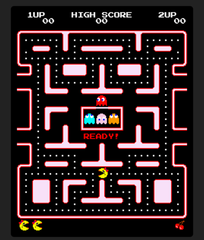
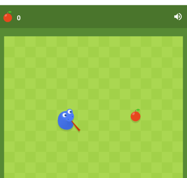
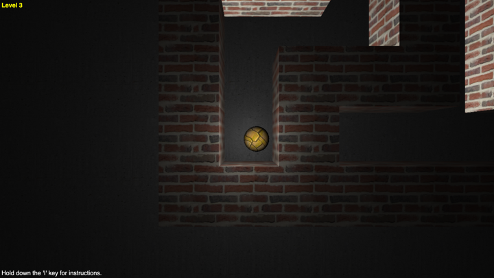
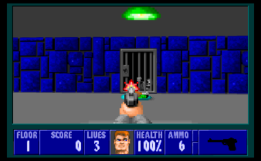
任务完成度。每个游戏有一个任务目标，GameWorld 从游戏内部状态计算完成度，取值 0 到 1，1 表示达成目标。agent 看不到这个数，只能看到屏幕上的分数。随机按键的完成度并不低：在全部可打分的任务上平均为 0.40，所以本报告的数字都应与随机水平对照阅读。
隐藏种子。学习时使用一组随机种子，最终成绩在 agent 从未见过的另一组种子上测量，测量期间不允许学习。
环境修补。我们发现 GameWorld 的 165 个任务中有 31 个所引用的评分字段游戏从不输出，任何策略都得 0 分；我们将这些字段映射到游戏实际输出的等价字段，并在每次运行中记录修补内容。
3Agent：一个给自己写程序的玩家
agent 的全部状态是一个目录，由它自己读写，人不介入。目录里有四样东西：跨游戏笔记、单游戏笔记、一个任何游戏都可以导入的共享代码库，以及每个游戏的技能程序的历次版本和对应的成绩簿。
三个设计约束贯穿全文。第一，反馈只有人类也能看到的东西：屏幕上的分数和死亡，评测用的任务完成度对 agent 不可见。第二，零逐游戏工程：所有游戏使用完全相同的提示词。第三，不规定记忆的内容：我们可以改变反思的时机、可见的信息、存储的上限，但不告诉 agent 应该记什么；如果它没有自发总结出游戏规律，这本身就是一个结果。
为了比较，我们还运行了几种对照：随机按键；无记忆（每局都是新手，模型逐帧决策）；文字记忆的两种形式（把所有历史局塞进上下文，或每局重写一份压缩笔记）；以及代码记忆的两种形式（上述固定结构，和只约定一个入口程序 play.py、其余结构完全由 agent 自定的版本）。
4结果
我们按三条标准的顺序报告六条发现：前两条关于"在一个游戏里变好"和"自组织记忆"，后四条关于"把经验带走"。所有数字都只使用不受已知实验缺陷影响的读数（见附录 A.4）：学习期间实际玩过的版本的成绩、第 1 局成绩，以及修复后重跑的实验。
4.1在单个游戏里，只有写成代码的经验才产生改进
在只玩一个游戏、每个游戏 10 局的条件下，各种记忆形式第 1 局的成绩都在 0.26 到 0.34 之间。此后，两种代码记忆逐局上升，学习期平均达到 0.48 和 0.56，其中 83% 到 92% 的步数由 agent 自己写的程序决定；两种文字记忆和无记忆一直停在 0.27 到 0.34，与随机按键的 0.21 相差不大。
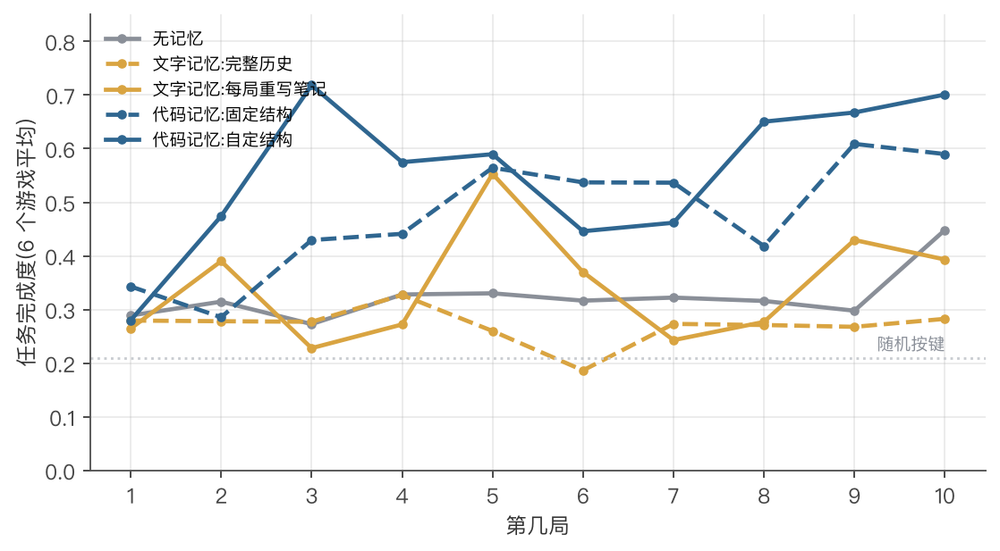
原因不难理解。时机类游戏的知识是"障碍离我多远、移动多快、什么时候按键"，这种知识只有写成每帧执行的程序才用得上；写在笔记里，模型每一步仍需要约 1 秒去看图，节奏早已错过。Wolf3D 是唯一一个文字笔记明显高于无记忆的游戏（学习期平均 0.53 对 0.43），这个游戏靠找敌人、找门和探索，属于决策而非反应。
下面是 agent 为 Chrome Dino 写的技能的核心片段，它在之后 5 局 400 步里没有调用一次模型，每局成本约 2 美分：
# agent 自己写的 Chrome Dino 技能（节选，共 131 行） gray = _gray(frame) dark = gray < 118 # 暗像素 = 恐龙、仙人掌、地面 ground = _ground_row(dark, W, H) # 找地面线 ... d = prev - obs_l # 障碍两帧之间移动的距离 = 速度 spd = d if spd is None else 0.6 * spd + 0.4 * d dist = obs_l - dino[1] thr = 2.2 * spd # 提前量与速度成正比 if dist <= thr: return "jump"
这段代码同时包含了两种知识：一个与画面绑死的阈值（红色，"灰度低于 118 的像素就是物体"），和一条与画面无关的游戏规律（蓝色，"起跳提前量与速度成正比"）。4.4 和 4.5 将说明，正是这两者混在一起，决定了经验能走多远。
4.2不给记忆结构，agent 会自己建出单游戏学习所需的结构
我们让 14 个 agent 在只约定入口程序 play.py 的条件下运行，不提供任何笔记、代码库或成绩簿的结构。它们全部自建了笔记，13 个改写自己的程序让它在游戏中写运行日志供下一次反思阅读，8 个建了成绩账本。其中"程序自写日志"是我们设计的固定结构里没有的。它们的成绩不低于固定结构（学习期平均 0.56 对 0.48）。
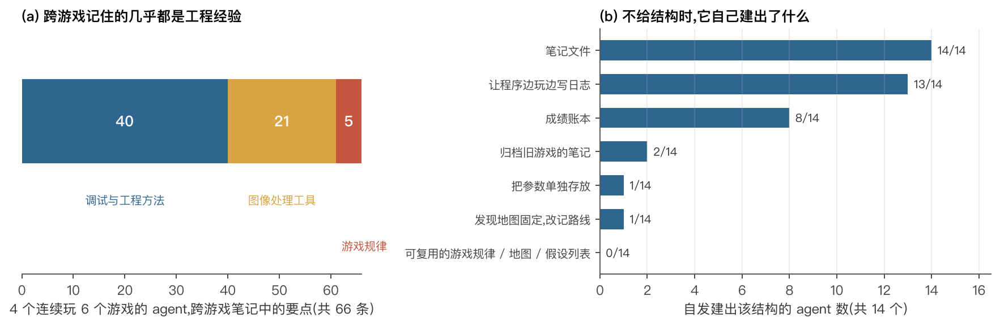
没有出现的东西同样重要：没有 agent 建立可在游戏之间复用的规律库，也没有建地图或待验证的假设列表。在单个游戏的范围内，模型已经能自己完成"记录、评估、回滚"这一套工程闭环；跨游戏的载体则需要另一种压力或另一种能力。
4.3跨游戏收益是常数，同类游戏的经验没有额外好处
我们让 agent 连续玩 6 个游戏，与在同一游戏上从零开始的 agent 配对比较。用学习效率比 TS(N) 衡量：第 N 个游戏上，有经验 agent 的学习期平均完成度除以从零开始的 agent。若 agent 在越学越快，TS(N) 应随 N 上升。
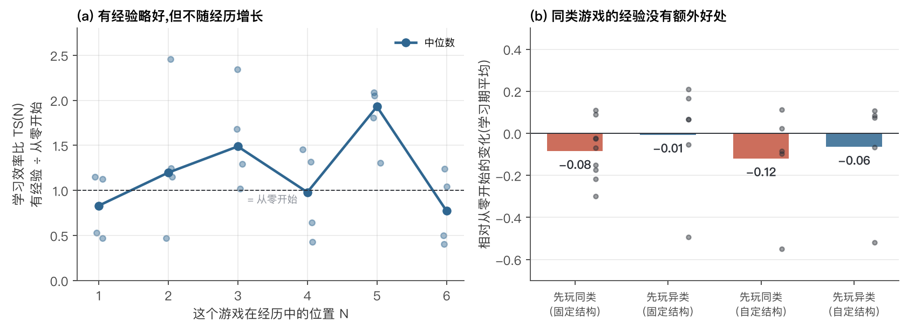
有经验确实略好，但这个优势在第 2 个游戏和第 6 个游戏上一样大，并不累积。同类游戏的经验没有带来额外好处：之前只玩过同类游戏的 agent，学习期平均比从零开始低 0.08（固定结构，9 个游戏中 2 个为正）和 0.12（自定结构，5 个中 2 个为正），第 1 局也更低（−0.09）。我们还试了三种只改机制、不规定内容的办法：让 agent 在新游戏第 1 局同时运行"继承版"和"从零版"技能并看到两者的分数；对记忆总量设上限迫使它取舍；以及完全放开结构。三者都没有改变这一结果。
4.4原因之一：它跨游戏记住的几乎都是工程经验
图 4(a) 给出了直接原因。66 条跨游戏要点中，约 40 条是调试和工程方法，约 21 条是图像处理工具，只有 5 条是游戏规律。下面是一个 agent 跨游戏笔记中的三条（原文为英文，此处为译文）：
"一次只改一个变量；保持已验证的路径不变；变差就回滚。"
"语法或导入错误会让整个技能失效：'技能决策 0%' 是红灯。"
"在滚动游戏里，固定宽度的物体停留在危险区的步数等于宽度除以速度。"
前两条是让 agent 在任何游戏里更快排除故障的经验，它确实带到了下一个游戏，这大概就是 TS 中位数 1.27 的来源；这类经验在一两个游戏后就攒齐了，所以收益不再增长。第三条是真正的游戏规律，它恰恰也是 Dino 和 Geodash 共享的那条规律，但它只停留在笔记里，从未变成可复用的代码；每到一个新游戏，agent 都重新写一遍 4.1 节里那样的感知加决策程序。
同类游戏反而吃亏的原因也在代码里。agent 在 Dino 上写了一个找地面、找障碍的模块放进共享代码库；到 Geodash 时它直接导入这个模块写出第一版技能，第 1 局由这段代码玩出 0.30，而从零开始的 agent 让模型看图玩出 0.49。继承来的是感知代码，而感知恰恰是两个游戏最不一样的部分。
4.5经验的有效范围止于"画面不变"
如果不同游戏之间差异太大，那么经验在多小的差异内还有用？我们在同一个游戏上构造了一个逐级加大差异的阶梯，比较"把在原版上玩过 10 局的工作区原样搬过来"的有经验 agent 和从零开始的 agent，各玩 6 局：同一游戏换随机种子；改变操作手感（按键持续时间或游戏速度乘以 1.5）；改一条规则（例如 Wolf3D 中敌人血量变为 3 倍）；换皮（截图颜色反转并轮换通道，游戏逻辑不变，同时撤掉文字规则说明）。三个游戏、两个种子，共 87 个 agent。
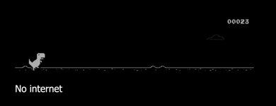
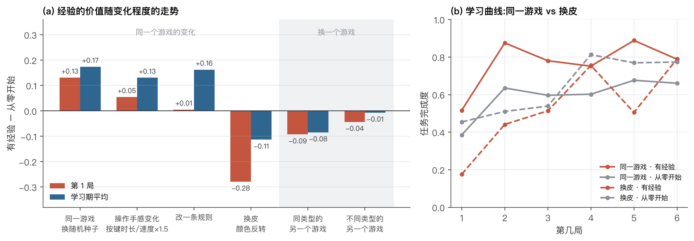
阶梯给出了一个清晰的分界。在画面不变的三级里，经验让第 1 局平均高 0.01 到 0.13、学习期平均高 0.13 到 0.17。画面一变，经验就从有利变为有害：换皮后有经验 agent 的第 1 局只有 0.18，从零开始的是 0.45，6 对中 5 对为负；学习期平均也低 0.11，同样 6 对中 5 对为负。它的改版理由（译文）写得很清楚：先是"切回冠军版本 v2"，然后是"灰度低于 118 的掩码选中了黑色背景，从不起跳"，到第 3 局才改出能适应两种明暗的掩码。它存下的感知代码和"哪个版本是冠军"的记录，在换皮后同时失效。成绩簿还揭示了一个副作用：有经验的 agent 在 108 局里有 81 局切回了"已验证的冠军版本"，从零开始的只有 18 局，经验让它少探索。
唯一扛住变化的是决策类经验。Wolf3D 中敌人血量变为 3 倍后，有经验 agent 的第 1 局仍高出 0.42，因为它记下的是地图、门和清敌路线，规则变了这些仍然有效。另一个现象值得注意：Dino 的规则改为"只有蹲着才得分"后，12 个 agent、72 局中没有一局系统地尝试过蹲下。这个 agent 不会主动探索去发现规则的变化。
把阶梯与 4.3 放在同一张图上（图 7a），经验的价值随差异增大而下降，在"画面改变"这一步就跌到零以下。另一个同类游戏的画面当然也不同，这解释了 4.3 中同类经验为什么没有用。
4.6在更干净的条件下重测：仍然没有迁移
前五条结果各自测量一个侧面。为了把"终身学习"作为一个整体来看，我们借用持续学习领域的标准做法（Lopez-Paz & Ranzato, 2017）：agent 依次学一条游戏链，每学完一关，就在一份冻结的副本上把整条链的每一关都测一遍，得到一张性能矩阵。我们为每一关加上"学会它花了多少局"作为成本。
| 游戏 A | 游戏 B | 游戏 C | 游戏 D | 学会成本 | |
|---|---|---|---|---|---|
| 学习前 | 0.60 | 0.60 | 0.60 | 0.60 | |
| 学完 A | 0.80 | 0.65 | 0.65 | 0.65 | 300 |
| 学完 B | 0.79 | 0.80 | 0.66 | 0.66 | 200 |
| 学完 C | 0.80 | 0.80 | 0.80 | 0.67 | 100 |
上表是一个理想终身学习者应有的样子（数字为示意）：对角线（深色）是学会的水平；右上（浅蓝）是还没学的游戏因为学过前面的而提前变好，即前向迁移；左下（浅红）是学过的游戏后来是否掉分，即遗忘；最后一列的成本应当递减。
策略游戏链。我们选了 5 个不考反应力的游戏：2048、Tetris、扫雷、Pac-Man、Minecraft。其中 3 个的原始目标太低（2048 的原目标随机按键就能达到），我们把目标调高（2048 总分 4000、Tetris 1500 分、扫雷正确插旗 10 个），使随机按键只有 0.2 到 0.5。每关最多学 8 局，连续两局达到 0.8 算学会；每格在隐藏种子上测 3 局；运行两次。
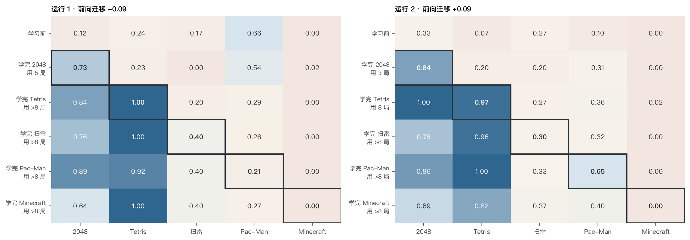
2048 和 Tetris 学会了（0.84 到 1.0）；扫雷停在 0.3 到 0.4，与随机按键相当；Pac-Man 没学会；Minecraft 全程为 0。能学会的仍是能写成固定规则程序的游戏，需要逐步推理、规划路线或 3D 探索的都没有学会。前向迁移两次分别为 −0.09 和 +0.09。已学游戏在学完全链后没有出现确定性的掉分：同一个程序版本在同一组种子上，单局成绩本身就在 0.38 到 1.0 之间波动，观察到的变化都在这个范围内。
宝可梦跨世代。小游戏里可共享的东西太少，又要先解决画面识别。为了在对迁移最友好的条件下再测一次，我们换到宝可梦对战（开源对战模拟器 Pokémon Showdown）：不同世代的宝可梦池和机制不同，但"属性克制、何时换人、判断对手"这一套策略是共享的；状态以文字给出，没有画面识别的负担；一局只需几秒到一分钟、约 $0.003，可以打几百局把胜率测准。agent 每回合读状态和笔记选一个动作；每代打 5 轮、每轮 10 局，每轮后反思改写本代笔记。终身组的笔记一路带下去，每学完一代还会把各代笔记并列、总结出跨世代的全局笔记。对手固定为内置最强的启发式 bot，学前、学后各测 100 局，两组各运行两次。
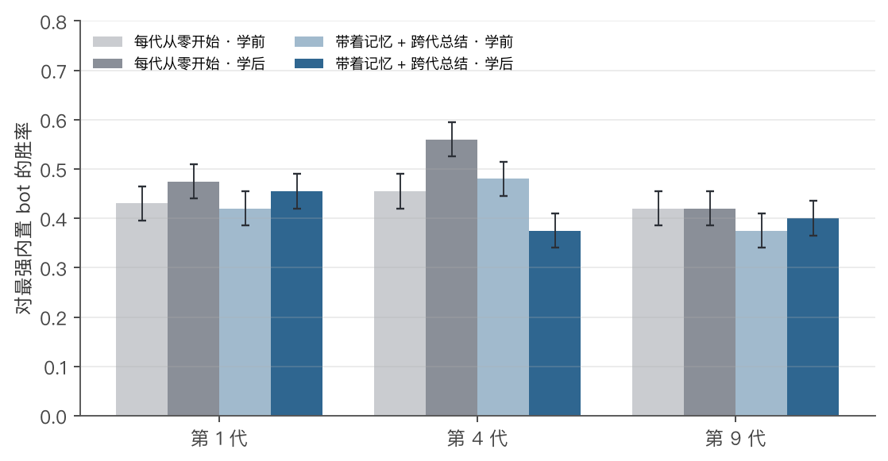
结果在同一世代内就没有学起来：从零组平均胜率学前 0.44、学后 0.49，终身组 0.43、学后 0.41，都在噪声附近。新世代学之前，终身组相对从零组也没有优势（第 4 代 0.48 对 0.46，第 9 代 0.38 对 0.42）。笔记的内容是对的，但都是模型本来就知道的常识，例如"先看双方血量、速度和属性，判断谁能击倒谁；处于劣势就换到有抗性的队友"。写成笔记没有增加信息，所以没有改变决策。终身组自己也在全局笔记里写道："这里的练习让第 1、4 代变差、第 9 代没提升，旧经验只当弱假设。"
5讨论：还有多远
| 终身游戏 agent 需要的能力 | 现状 | 证据 |
|---|---|---|
| 凭反馈在一个游戏里越玩越好 | 能，前提是经验写成代码 | 4.1 |
| 自己组织记忆 | 能，限于单游戏内的工程闭环 | 4.2 |
| 把一个游戏学到高水平 | 部分：能写成固定规则的游戏可以（2048、Tetris），需要推理、规划或 3D 探索的不行 | 4.6 |
| 把经验带到下一个游戏 | 常数级收益，不累积；更干净的条件下（宝可梦）为零 | 4.3、4.6 |
| 记住与画面无关的游戏规律 | 否，规律只留在笔记里，或只是常识 | 4.4、4.6 |
| 经验在环境变化后仍然有效 | 仅限画面不变；决策类经验是例外 | 4.5 |
| 主动探索以发现规则变化 | 否 | 4.5 |
| 越学越快 | 否 | 4.3、4.6 |
| 学新游戏不忘旧游戏 | 修复实验框架后，未见超出测量噪声的遗忘 | 4.6 |
三条标准中，前两条已经可以做到，第三条断在一个明确的位置：agent 存下的经验要么太具体，要么太空泛，缺了中间那一层。太具体的是与像素绑定的感知代码（"灰度低于 118 的是物体"），换个画面就失效；太空泛的是模型本来就知道的常识（宝可梦笔记），存了也不增加信息；能带走的工程方法（"一次只改一处"）一两个游戏后就攒齐了。缺失的中间层是游戏规则和机制："碰到尖刺会死""起跳提前量与速度成正比""水系克火系"。这一层既不平凡，又能跨游戏复用，却几乎从未被单独存下来。另一个原因是学习信号嘈杂：只看每局的结局分数，而同一份代码的单局成绩就能在 0.38 到 1.0 之间波动，agent 很难判断一次修改到底有没有用。
我们离终身游戏 agent 的距离，不在于它学不会，而在于它学会的东西要么只在它见过的像素里有效，要么是它本来就知道的。
与已有工作的关系。人类学游戏也依赖先验：把一个游戏的物体语义和视觉一致性去掉，人类通关时间会从约 2 分钟增加到 20 多分钟（Dubey 等, 2018），这与我们的换皮结果是同一个现象。近期在 12 个虚幻引擎游戏上的 OmniGameArena 发现，反思学到的技能在原版上的提升不能预测它在留出变体上的表现；其中一个游戏上原版提升最大（+201%）的模型，在全部三个变体上都是负迁移。在规则陌生的文字游戏上，Learn2Play Bench 发现保留完整的行动与反馈记录比把经验总结成规则更有效，并且人类比 agent 尝试更多样的策略、更少重复动作，与我们观察到的"守着冠军版本、不探索"相呼应。在文本环境中，有跨环境迁移证据的记忆机制主要是从成功与失败轨迹中对比蒸馏出子任务级经验（ExpeL、ReasoningBank），以及以下游任务回报训练的记忆整理器（Auto-Dreamer）。
下一步：把"规则"作为积累的单位。人类学游戏快，主要靠建立关于规则的模型（什么碰了会死、东西怎么动），再用它推演，而不是记下该怎么操作。已有工作显示这条路可行：基于理论的 agent 把每个游戏的规则学成小程序、主动设计试探去验证、再用规则规划，在简单网格游戏上接近人类的学习效率（Tsividis 等, 2021）；WorldCoder 让大模型把环境规则写成可执行的世界模型，比直接学策略省得多，并能通过修改代码在环境之间迁移；面向"在规则全新的游戏里多快学会"的 ARC-AGI-3 上，也有工作用可执行世界模型取得进展（2026）。据此我们提出一个可证伪的假设：如果 agent 每一步先预测下一状态、把规则写成可运行的模型、主动设计试探来验证猜想、用规则模型规划，并把验证过的机制存进跨游戏的机制库，那么后面的游戏需要新学的规则会越来越少，学习成本随之下降。这同时针对两个问题：预测误差每一步都有确定的对错，比结局分数密集得多；规则正是缺失的中间层。如果这样做之后后面的游戏仍然没有变便宜，问题就在更深处，例如模型的归纳能力，或者需要把经验训练进权重。我们只设计这些学习机制，不告诉 agent 任何具体规则。
6局限
- 样本量。小游戏实验多数条件每格只有 1 到 2 个 agent，同条件下两个 agent 的成绩可相差一倍，单局成绩本身也有明显波动。各结论的方向在 5 到 9 个游戏或多数配对上一致，单个数值的可信范围约为 ±0.15。宝可梦每格 2×100 局，标准误约 0.035。
- 只有一个模型。更强的模型是否会自发抽象游戏规则，是本报告最直接的未检验变量。
- 经历很短。每个游戏 6 到 10 局，最多连续 6 个游戏。这个量级只够"适应"，不够"精通"。
- 宝可梦只测了文字笔记。代码载体（例如伤害计算加前瞻搜索的程序）在宝可梦上尚未测试。
- 固定结构 agent 的笔记会被截断。单游戏笔记有约 70%、跨游戏笔记约 38% 在最后一次写入时超出字数上限被截掉结尾，被截掉的多是"还没确定的事、下一步打算"一类内容。因此"没有出现假设列表"只对不截断的自定结构 agent 成立。宝可梦实验不再静默截断。
- 游戏范围。仅限可暂停的浏览器游戏和回合制对战；实时、多人、长时程的商业游戏不在本报告范围内。
A附录
A.1 实验规模与成本
| 项目 | 数值 |
|---|---|
| 浏览器游戏：总局数 | 约 5 000 局，约 120 万环境步 |
| 宝可梦对战：总局数 | 3 400 局 |
| API 总花费（按高峰价计，为上限） | 约 $345 |
| 一局浏览器游戏，模型逐步决策 | $0.05–0.25，8–15 分钟 |
| 一局浏览器游戏，技能程序接管 | $0.01–0.03，2–3 分钟 |
| 一局宝可梦对战 | 约 $0.003 |
A.2 实现细节
- 每步决策关闭模型的思考模式（约 1.2 秒一步）；局后反思开启中等强度的思考，若思考耗尽输出预算导致空回复则降低强度重试。
- 技能程序在独立子进程中运行，每帧时限 2 秒；出错或超时时本步交给模型。
- 操作手感变化在按键执行层实现；改规则通过对游戏源码打补丁生成本地副本；换皮在截图上做颜色变换，不影响游戏逻辑。
- 链式实验：学习在连续两局达标或第 8 局后停止，最后一局之后不再反思；每学完一个游戏，把共享代码库冻结一份给这个游戏的技能使用。
- 宝可梦：每回合一次模型调用；笔记超出上限时先让模型自己压缩，压缩后仍超出才截断并记录。
A.3 GameWorld 环境修补
GameWorld 的 165 个任务中有 31 个所引用的评分字段游戏从不输出，任何策略都得 0 分；我们将这些字段映射到游戏实际输出的等价字段，并在每次运行中记录修补内容。
A.4 修订说明（2026-10-20）
在后续实验中，我们发现了三处实验框架的缺陷，并据此修订了本文：
- 撤回"学新游戏会弄坏旧游戏"。上一版报告了一例遗忘：学 Dino 时写进共享代码库的模块，让 Snake 的旧技能成绩从 1.00 掉到 0.33。原因是不同游戏的模块同名，属于我们实验框架的缺陷，不是 agent 的性质。修复后（每个游戏学完时冻结一份共享代码库），没有再出现超出测量噪声的遗忘。
- 改用不受影响的读数。早期实验在最后一局学习之后仍让 agent 反思一次，再在隐藏种子上测"最终成绩"，测到的可能是一个从未试玩过的新版本。本版的图 3、图 5(b)、图 7 改用学习期间实际玩过的版本的成绩和第 1 局成绩。结论方向不变，部分数值改变：例如代码记忆的单游戏成绩从 0.53 / 0.61 改为 0.48 / 0.56；"先玩同类游戏"相对从零开始从 −0.12 改为 −0.08；Wolf3D 文字笔记的效果从 0.83 改为 0.53（无记忆为 0.43）。
- 链式实验重跑。上一版的链式矩阵来自修复前的实验，本版换成修复后重跑的策略游戏链（图 8），并新增宝可梦跨世代实验（图 9）。
- "没有假设列表"的适用范围。固定结构 agent 的笔记会被截断，被截掉的结尾里常有待验证的猜想，因此这一观察只对不截断的自定结构 agent 成立。
参考文献
- Ouyang et al. GameWorld: Towards Standardized and Verifiable Evaluation of Multimodal Game Agents. arXiv:2604.07429
- Wang et al. Voyager: An Open-Ended Embodied Agent with Large Language Models. arXiv:2305.16291
- Tan et al. Cradle: Empowering Foundation Agents Towards General Computer Control. arXiv:2403.03186
- Lopez-Paz & Ranzato. Gradient Episodic Memory for Continual Learning. arXiv:1706.08840
- Dubey et al. Investigating Human Priors for Playing Video Games. ICML 2018. arXiv:1802.10217
- Tsividis et al. Human-Level Reinforcement Learning through Theory-Based Modeling, Exploration, and Planning. arXiv:2107.12544
- Tang, Key & Ellis. WorldCoder, a Model-Based LLM Agent: Building World Models by Writing Code and Interacting with the Environment. NeurIPS 2024. arXiv:2402.12275
- ARC Prize Foundation. ARC-AGI-3. arXiv:2603.24621
- Executable World Models for ARC-AGI-3 in the Era of Coding Agents. arXiv:2605.05138
- Zhao et al. ExpeL: LLM Agents Are Experiential Learners. arXiv:2308.10144
- Ouyang et al. ReasoningBank: Scaling Agent Self-Evolving with Reasoning Memory. arXiv:2509.25140
- Ye et al. Auto-Dreamer: Learning Offline Memory Consolidation for Language Agents. arXiv:2605.20616
- Lin et al. OmniGameArena: A Unified UE5 Benchmark for VLM Game Agents with Improvement Dynamics. arXiv:2606.09826
- Li et al. Learn2Play Bench: How Well Do LLM Agents Learn from Experience in Unfamiliar Environments? arXiv:2610.08215
- Pokémon Showdown（开源对战模拟器）github.com/smogon/pokemon-showdown；poke-env github.com/hsahovic/poke-env
游戏截图取自 GameWorld 收录的第三方网页游戏，版权归各自所有者，仅用于研究说明。改规则所用的游戏副本由补丁脚本在本地生成，不随代码分发。宝可梦为任天堂、Creatures、Game Freak 的商标，本文仅使用开源对战模拟器做研究。